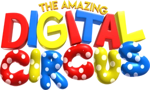
El Asombroso Circo Digital es una serie web Australiana de comedia y terror psicológico de animación CGI creada por Gooseworx, producida por los hermanos Kevin y Luke Lerdwichagul de Glitch Productions, y financiada por Screen Australia. Se estrenó el 13 de octubre de 2023 en YouTube y finalizó el 4 de junio de 2026 con el estreno de su último cápitulo en cines y, posteriormente, en Youtube. Seis almas humanas con problemas, incluida la tímida recién llegada y protagonista de la serie Pomni, se encuentran atrapados en El Asombroso Circo Digital, un videojuego de realidad virtual dirigido por una inteligencia artificial peculiar pero inconsciente llamada Caine y su entusiasta asistente Bubble. Junto con las otras cinco almas, Caine envía a Pomni a una variedad de aventuras inadvertidamente implacables y a veces bastante traumáticas mientras intenta mantener su cordura y descubrir algún tipo de camino de regreso al mundo real.
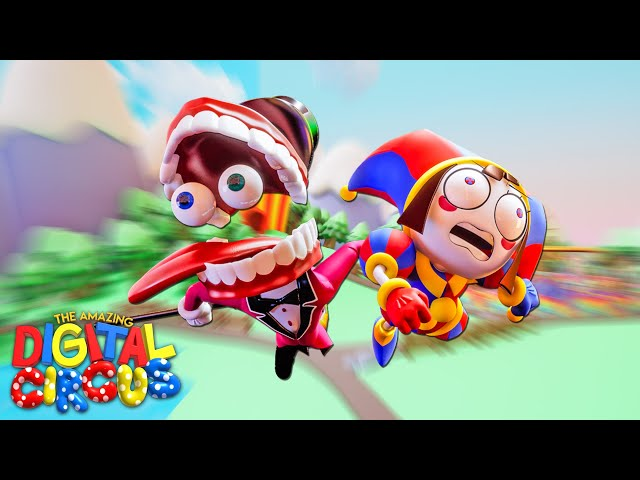
Una mujer queda atrapada en un extraño mundo virtual con temática circense en el que ella y otras cinco personas deben jugar unos juegos bajo la dirección de una IA desatada.
Ver en YouTube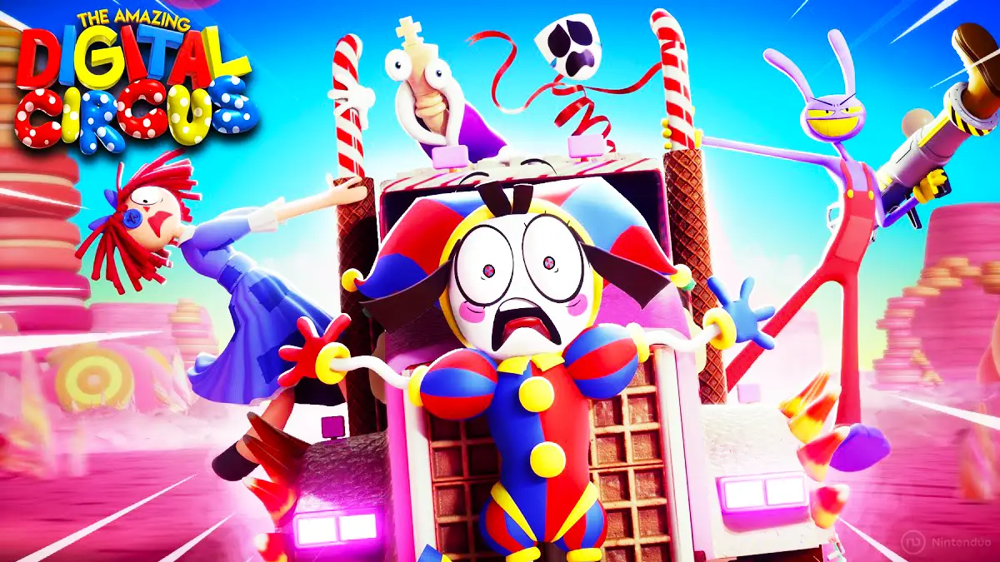
El equipo de Digital Circus se embarca en una aventura llena de dulces para capturar a un bandido que robó el jarabe de arce del Reino Candy Canyon. Sin embargo, las cosas salen mal cuando tanto el bandido como Pomni caen repentinamente bajo el mapa, revelándole al bandido la verdad sobre este mundo y su existencia.
Ver en YouTube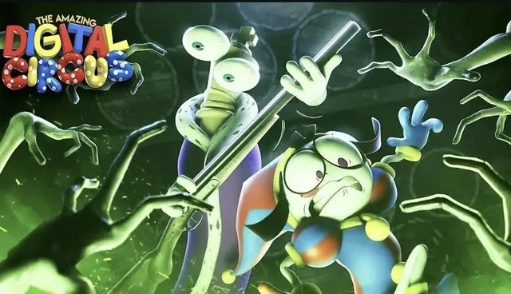
¡La pandilla está de vuelta para embarcarse en su próxima aventura ESPELUZNANTE! ¡Kinger consigue una escopeta! ¡Zooble va a terapia! ¡Pomni se va al infierno! ¡¡¡¡¡Les espera muchísima diversión!!!!!
Ver en YouTube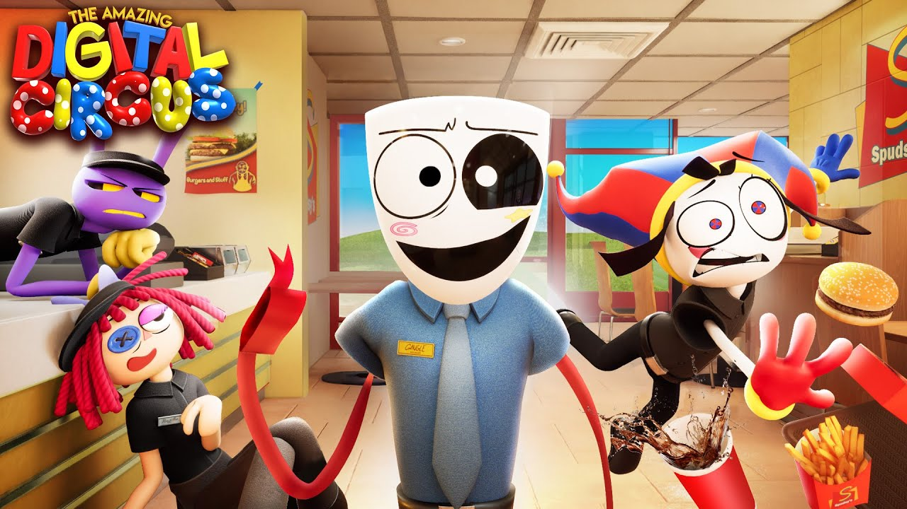
¡Pomni y sus amigos tendrán que trabajar un día entero en el restaurante de comida rápida Spudsy's! ¡Pero cuidado, Gangle ocupa el puesto de gerente con una mascara nueva... y ahora parece una persona DIFERENTE!
Ver en YouTube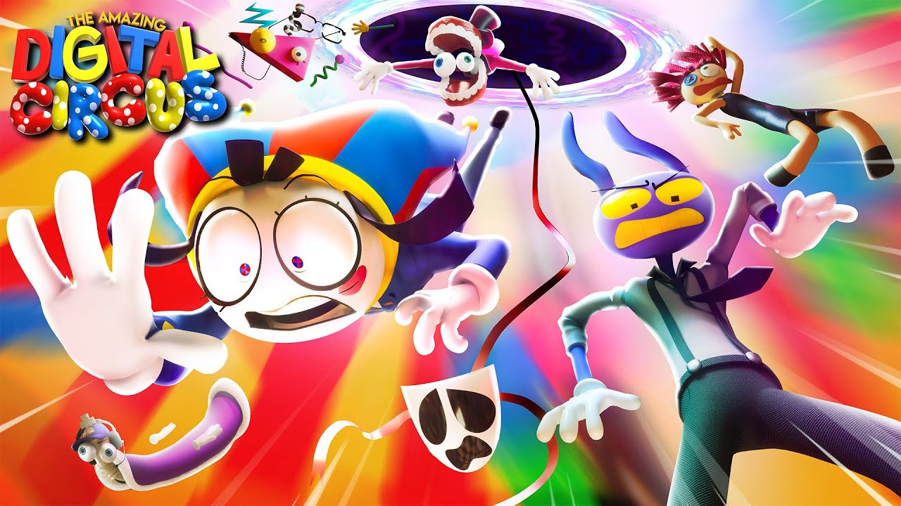
¡En realidad no estamos seguros de qué trata este episodio!
Ver en YouTube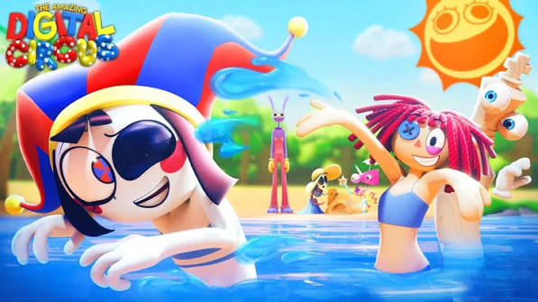
La pandilla va a la playa para disfrutar del sol, pero unas inquietantes revelaciones comienzan a revelar grietas en el Circo de Caine.
Ver en YouTube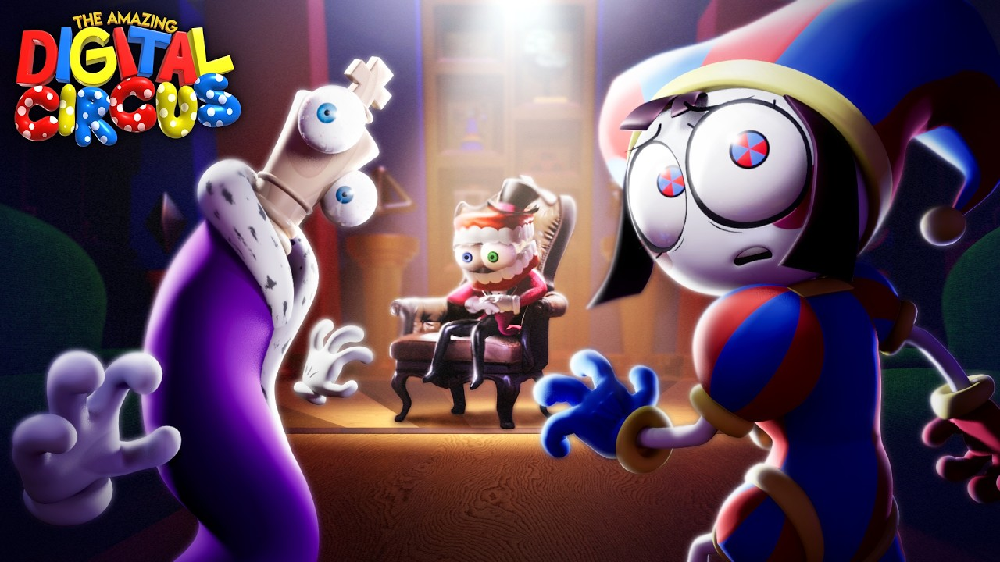
a... Tras la aventura anterior, la confianza del grupo en Caine se desmorona. A medida que las reparaciones del inestable maestro de ceremonias con IA empeoran el circo, el grupo lucha por mantener la cordura y la unidad mientras sombras de su pasado resurgen, amenazando lo que tienen.
Ver en YouTube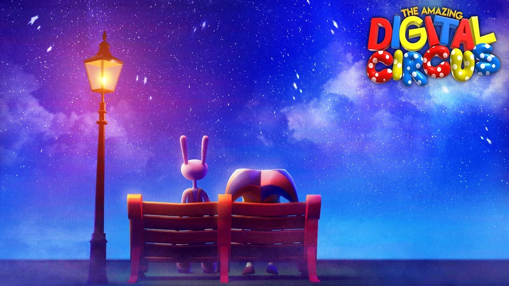
El Asombroso Circo Digital llega a su final... A medida que su realidad se va desmoronando, el elenco descubre la verdad detrás del Circo Digital y su historia.
Ver en YouTube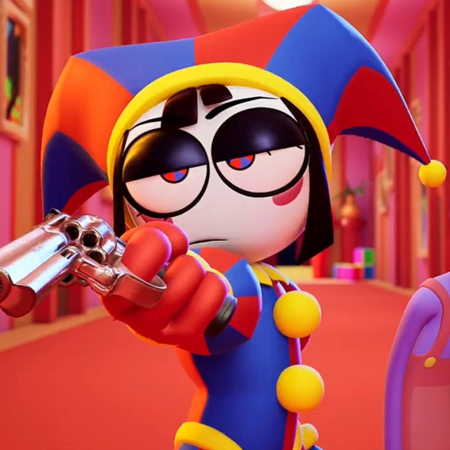
Pomni es una de las protagonistas de la serie animada independiente de Glitch Productions, El Asombroso Circo Digital. Lizzie Freeman le da voz en inglés, y Noelia Lestani en español, e hizo su primera aparición en el episodio piloto. Tomando la forma de un bufón de dibujos animados mientras está atrapada dentro del Circo Digital con otras cinco víctimas, ella es la humana más reciente en ingresar después de ponerse unos cascos de VR.
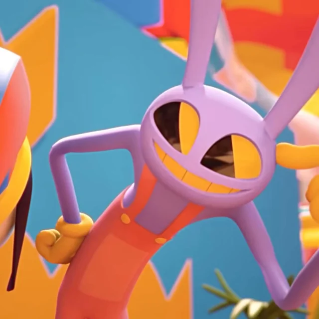
Jax es uno de los personajes principales de El Asombroso Circo Digital, la serie web animada independiente de Glitch Productions. Es representado como un conejo, con una personalidad sátira y sarcástica. A menudo en la serie sirve como alivio cómico y está atrapado en el Circo Digital junto con cinco víctimas más.
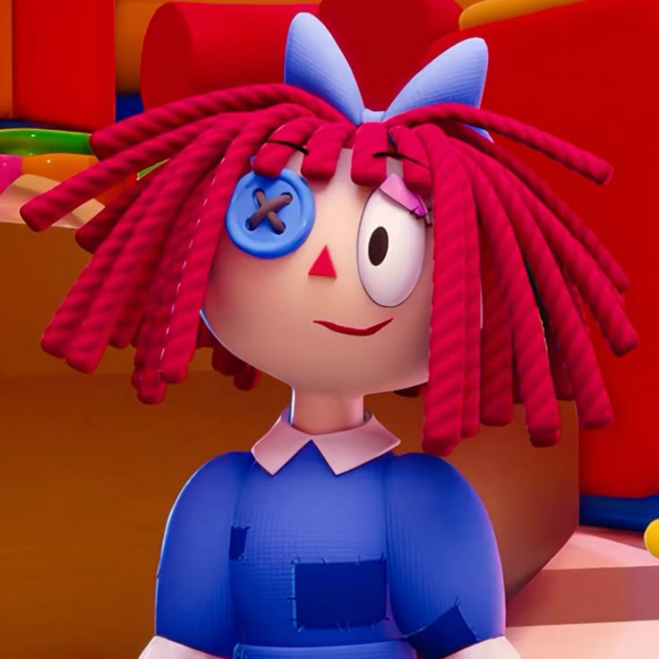
Ragatha es una de los personajes principales de la serie web animada independiente El Asombroso Circo Digital, producida por Glitch Productions, y tiene la voz de Amanda Hufford en inglés y de Valca Ponzanelli en español. Es un personaje con forma de muñeca de trapo que está atrapada en el Circo Digital junto con otras cinco víctimas.
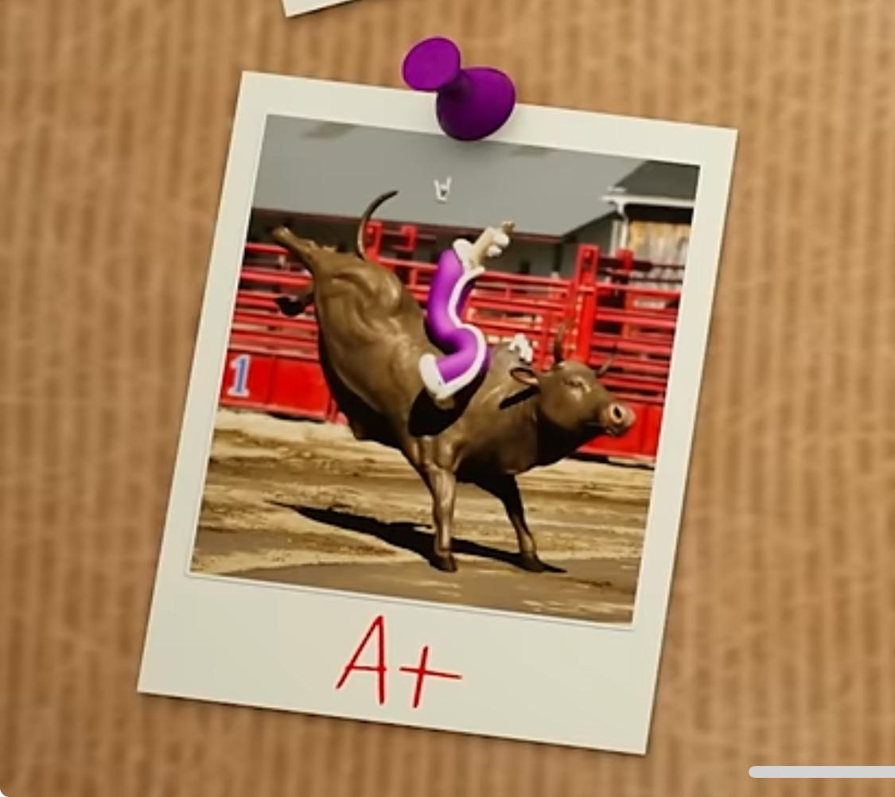
Kinger es uno de los personajes principales de la serie web animada independiente de Glitch Productions El Asombroso Circo Digital, con la voz de Sean Chiplock y doblado por Elliot Leguizamo. Es una pieza de ajedrez rey antropomorfa atrapada en el Circo Digital junto con otras cinco víctimas.
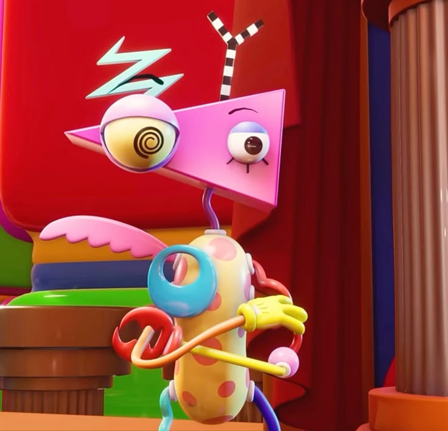
Zooble es uno de los personajes de El Asombroso Circo Digital. Es una amalgama de piezas de juguete sin género, que se le reconoce por la mayoría de veces ignorar las aventuras organizadas por Caine, así como su personalidad mezquina y satírica.
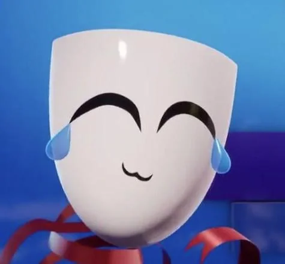
Gangle es uno de los personajes principales de la serie web El Asombroso Circo Digital. En el Circo Digital es una cinta con máscara teatral antropomórfica.
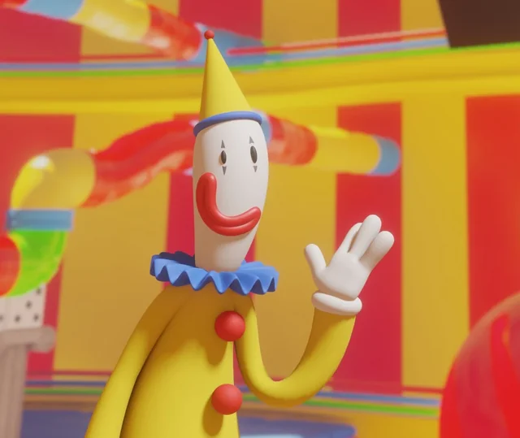
Kaufmo es un personaje de la serie web animada independiente El Asombroso Circo Digital, producida por Glitch Productions, y un antiguo residente del Asombroso Circo Digital.
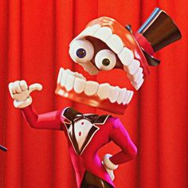
Creative Artificial Intelligence Networking Entity, abreviado como Caine, es el principal antagonista de la serie animada independiente de Glitch Productions, El Asombroso Circo Digital. Cuenta con la voz de Alex Rochon en el idioma original y la de Rodo Balderas en el doblaje al español.
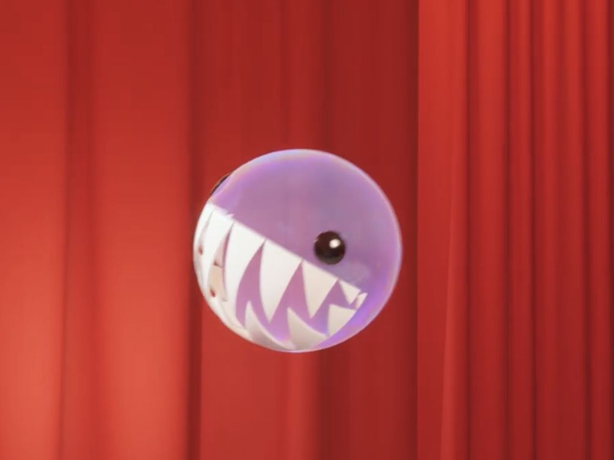
Bubble es el antagonista secundario de la serie independiente El Asombroso Circo Digital producida por Glitch Productions. En el idioma original es interpretado por Gooseworx, creadora de la serie. Es una de las Inteligencias Artificiales[3] de El Asombroso Circo Digital junto con Caine, es mostrado como su acompañante y asistente que vive dentro de su sombrero hasta ser invocado. Puede desaparecer y ser devuelto al sombrero de copa de Caine